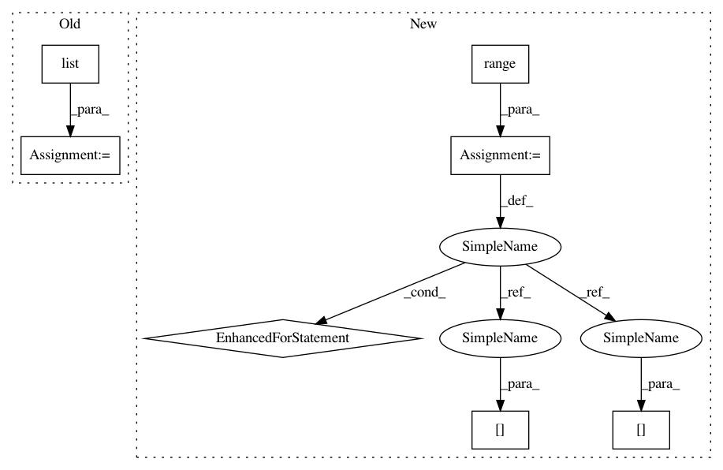

0dfe27c952b9c6f76425394f166a7058e86d3218,qiskit/aqua/operators/common.py,,measure_pauli_z,#Any#Any#,21
Before Change
num_shots = sum(data.values())
p_z_or_x = np.logical_or(pauli.z, pauli.x)
for key, value in data.items():
bitstr = np.asarray(list(key))[::-1].astype(np.bool)
// pylint: disable=no-member
sign = -1.0 if np.logical_xor.reduce(np.logical_and(bitstr, p_z_or_x)) else 1.0
observable += sign * value
observable /= num_shots
After Change
tot = sum(data.values())
for key in data:
value = 1
for j in range(pauli.numberofqubits):
if ((pauli.x[j] or pauli.z[j]) and
key[pauli.numberofqubits - j - 1] == "1"):
value = -value
// print(key, data[key])
observable = observable + value * data[key] / tot
return observable
// observable = 0.0
In pattern: SUPERPATTERN
Frequency: 3
Non-data size: 7
Instances
Project Name: Qiskit/qiskit-aqua
Commit Name: 0dfe27c952b9c6f76425394f166a7058e86d3218
Time: 2019-07-16
Author: chenrich@us.ibm.com
File Name: qiskit/aqua/operators/common.py
Class Name:
Method Name: measure_pauli_z
Project Name: fgnt/pb_bss
Commit Name: 32d73ccb0d80db3727775fb9928f5f151ddaaab5
Time: 2015-10-06
Author: cbj@mail.uni-paderborn.de
File Name: nt/speech_enhancement/mask_estimation.py
Class Name:
Method Name: simple_ideal_soft_mask
Project Name: NeuromorphicProcessorProject/snn_toolbox
Commit Name: 08a4d83a7836b0de430850e72a64e283bdc56d05
Time: 2017-07-17
Author: bodo.rueckauer@gmail.com
File Name: snntoolbox/simulation/plotting.py
Class Name:
Method Name: output_graphs
Project Name: Qiskit/qiskit-aqua
Commit Name: 0dfe27c952b9c6f76425394f166a7058e86d3218
Time: 2019-07-16
Author: chenrich@us.ibm.com
File Name: qiskit/aqua/operators/common.py
Class Name:
Method Name: measure_pauli_z